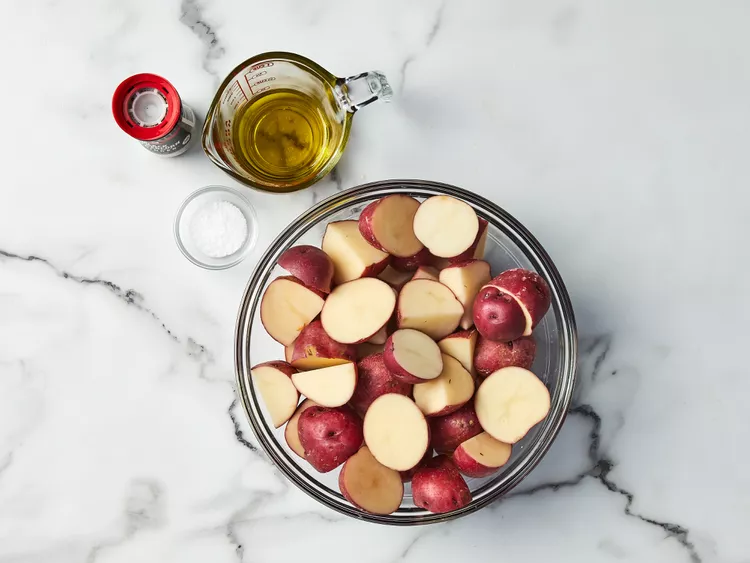

Home
Roasted Potato

Ingredients
-
3 pounds small red new potatoes, halved
-
¼ cup olive oil
-
1 teaspoon salt and freshly ground black pepper
Steps
Gather all ingredients. Preheat the oven to 400 degrees F (200 degrees C) and adjust the oven rack to the lowest position.
Toss potatoes with oil, salt, and pepper in a bowl. Arrange, cut-side down, on a rimmed cookie sheet or jellyroll pan.
Roast potatoes in the preheated oven until tender and golden brown, 20 to 30 minutes. Transfer to a serving dish.